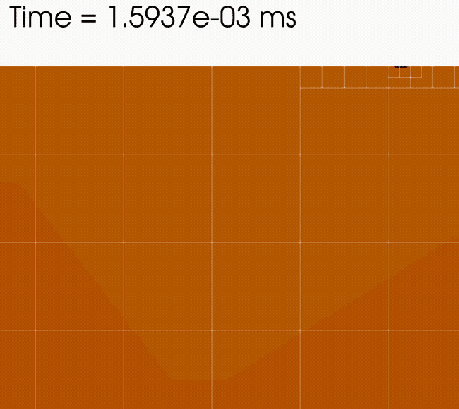

Why Block-Structured AMR?
Block-structured AMR provides a way to exploit varying resolution requirements
in space and time by focusing computational resources in spatiotemporal
regions of interest. Note that there is no parent-child relationship between
coarser grids and finer grids as the grid structure dynamically evolves
over time.

Depicted above is the development of a cold dodecane jet into a hot chamber using 3 levels of
refinement demonstrating solution-adaptive mesh refinement.